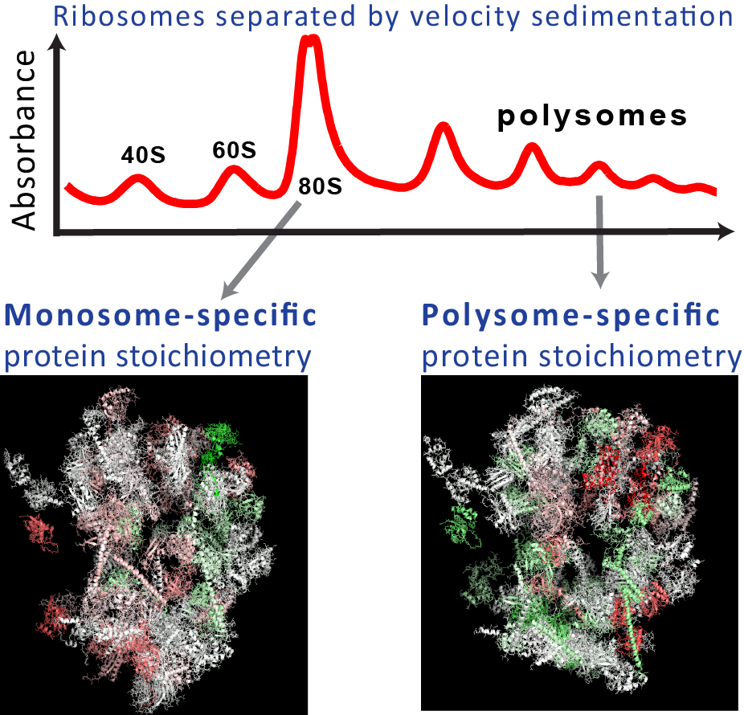

Supporting Information
Differential stoichiometry among core ribosomal proteins
Interactive Data
Home
Cell Press Links Cell Reports PDF SI
Spotlight by Thomas Preiss, TiBS, 2015
Highlights NEU News Phys.org News Paper's History Seeking evidence CSHL Talk
Preprints bioRxiv arXiv
Cell Press Links Cell Reports PDF SI
Spotlight by Thomas Preiss, TiBS, 2015
Highlights NEU News Phys.org News Paper's History Seeking evidence CSHL Talk
Preprints bioRxiv arXiv
Summary
Ribosomes are large complexes of ribosomal proteins (RPs) and RNAs that catalyze protein synthesis. Perturbations and mutations that alter or delete RPs can cause diseases and can affect selectively the synthesis of some proteins but not of others. This selectivity raises the hypothesis that cells may build specialized ribosomes with different stoichiometries among RPs as a means of regulating protein synthesis. While such specialized ribosomes have been hypothesized for decades, there was no direct evidence for their existence in unperturbed wild--type cells. We provided such evidence in yeast and mouse stem cells. We showed that the RP stoichiometry depends on the growth-conditions and on the number of ribosomes bound per mRNA. This variability in the RP stoichiometry correlates to fitness and to growth-rate-dependent RP transcription.
Download Data
- Processed Data
- Color-Coded 3D ribosome structures: PyMOL PDB Files
- Color-Coded 3D ribosome structure: Movie [20 MB]
- Color-Coded 3D ribosome structure: HD Movie [26 MB]
- Raw MS Data
- Yeast Ribosomes, Trypsin Digestion | Google Drive
- Mouse Ribosomes, Trypsin Digestion | Google Drive
- Mouse Ribosomes, Lys-C Digestion | Google Drive
Slavov N.✉, Semrau S., Airoldi E., Budnik B., van Oudenaarden A. (2015)
Differential stoichiometry among core ribosomal proteins
Cell Reports, vol. 13 PDF | SI | Summary | TiBS Spotlight
Differential stoichiometry among core ribosomal proteins
Cell Reports, vol. 13 PDF | SI | Summary | TiBS Spotlight